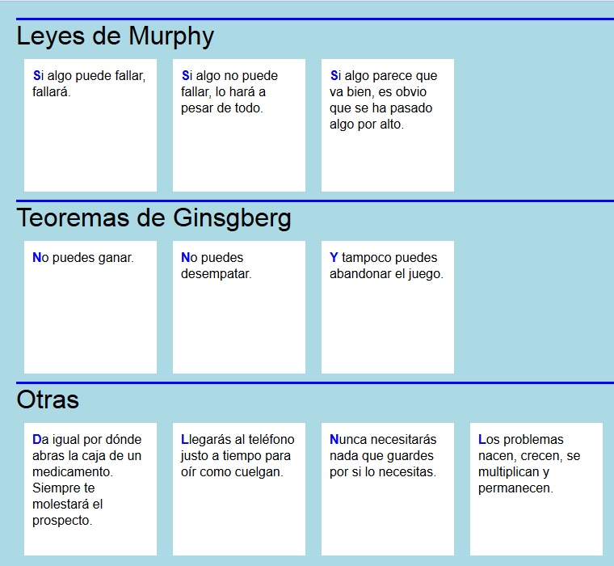

Resuelva los siguientes ejercicios guardando las respuestas en una carpeta cuyo nombre contenga su nombre y apellidos.
Corrija los errores del siguiente documento para que esté bien formado.
<?xlm version="2.0" encoding="UTF-8"?>
<cancion duracion=''01:56''>
<título>Do you want to know a secret</titulo>
<musica>John Lennon</letra>
<letra>John Lennon</musica>
<cancion>
Escriba una hoja de estilo CSS para que el siguiente documento se vea en el navegador como muestra la imagen.
<?xml version="1.0" encoding="UTF-8"?>
<leyes>
<titulo>Humor</titulo>
<murphy>
<tipo>Leyes de Murphy</tipo>
<ley>Si algo puede fallar, fallará. </ley>
<ley>Si algo no puede fallar, lo hara a pesar de todo.</ley>
<ley>Si algo parece que va bien, es obvio que se ha pasado algo por alto.</ley>
</murphy>
<ginsgberg>
<tipo>Teoremas de Ginsgberg</tipo>
<ley>No puedes ganar.</ley>
<ley>No puedes desempatar.</ley>
<ley>Y tampoco puedes abandonar el juego.</ley>
</ginsgberg>
<otras>
<tipo>Otras</tipo>
<ley>Da igual por donde abras la caja de un medicamento. Siempre te molestará el prospecto.</ley>
<ley>Llegarás al teléfono justo a tiempo para oír como cuelgan.</ley>
<ley>Nunca necesitarás nada que guardes por si lo necesitas.</ley>
<ley>Los problemas nacen, crecen, se multiplican y permanecen.</ley>
</otras>
</leyes>

Dado el siguiente documento XML, escriba las expresiones XPath que devuelvan exactamente las respuestas indicadas en los cuadros. Escriba todas las expresiones XPath en un único fichero de texto, numerando las respuestas.
<?xml version="1.0" encoding="UTF-8"?>
<coches>
<marcas>
<marca nombre="Renault" inicio="1899" pais="Francia" />
<marca nombre="Volkswagen" inicio="1937" pais="Alemania" />
<marca nombre="Peugeot" inicio="1896" pais="Francia" />
<marca nombre="Mercedes-Benz" inicio="1926" pais="Alemania" />
</marcas>
<categorias>
<categoria>
<segmento>B</segmento>
<size>subcompact</size>
</categoria>
<categoria>
<segmento>C</segmento>
<size>compact</size>
</categoria>
<categoria>
<segmento>D</segmento>
<size>mid-size</size>
</categoria>
</categorias>
<modelos>
<modelo nombre="Clio" marca="Renault" inicio="1990" final="1998" categoria="B" />
<modelo nombre="Clio II" marca="Renault" inicio="1998" final="2012" categoria="B" />
<modelo nombre="Clio III" marca="Renault" inicio="2005" final="2014" categoria="B" />
<modelo nombre="Clio IV" marca="Renault" inicio="2012" categoria="B" />
<modelo nombre="Mégane" marca="Renault" inicio="1995" final="2002" categoria="C" />
<modelo nombre="Mégane II" marca="Renault" inicio="2002" final="2009" categoria="C" />
<modelo nombre="Mégane III" marca="Renault" inicio="2008" final="2016" categoria="C" />
<modelo nombre="308 T7" marca="Peugeot" inicio="2008" final="2013" categoria="C" />
<modelo nombre="308 T9" marca="Peugeot" inicio="2013" categoria="C" />
<modelo nombre="Golf A1" marca="Volkswagen" inicio="1974" final="1984" categoria="C" />
<modelo nombre="Golf A2" marca="Volkswagen" inicio="1983" final="1992" categoria="C" />
<modelo nombre="Golf A3" marca="Volkswagen" inicio="1991" final="1998" categoria="C" />
<modelo nombre="Golf A4" marca="Volkswagen" inicio="1998" final="2005" categoria="C" />
<modelo nombre="Golf A5" marca="Volkswagen" inicio="2003" final="2009" categoria="C" />
<modelo nombre="Golf A6" marca="Volkswagen" inicio="2008" final="2014" categoria="C" />
<modelo nombre="Golf A7" marca="Volkswagen" inicio="2012" categoria="C" />
<modelo nombre="Passat B1" marca="Volkswagen" inicio="1973" final="1981" categoria="D" />
<modelo nombre="Passat B2" marca="Volkswagen" inicio="1981" final="1988" categoria="D" />
<modelo nombre="Passat B3" marca="Volkswagen" inicio="1988" final="1996" categoria="D" />
<modelo nombre="Passat B5" marca="Volkswagen" inicio="1996" final="2005" categoria="D" />
<modelo nombre="Clase C W202" marca="Mercedes-Benz" inicio="1993" final="2000" categoria="D" />
<modelo nombre="Clase C W203" marca="Mercedes-Benz" inicio="2000" final="2007" categoria="D" />
<modelo nombre="Clase C W204" marca="Mercedes-Benz" inicio="2007" final="2014" categoria="D" />
<modelo nombre="Clase C W205" marca="Mercedes-Benz" inicio="2014" categoria="D" />
</modelos>
<premios>
<caroftheyear year="1991" modelo="Clio III" />
<caroftheyear year="1992" modelo="Golf A3" />
<caroftheyear year="2003" modelo="Mégane II" />
<caroftheyear year="2006" modelo="Clio III" />
<caroftheyear year="2013" modelo="Golf A7" />
<caroftheyear year="2014" modelo="308 T9" />
</premios>
</coches>
nombre="Renault"
nombre="Peugeot"
nombre="Clio IV"
nombre="308 T9"
nombre="Golf A7"
nombre="Clase C W205"
nombre="Clio II"
nombre="Mégane"
nombre="Golf A4"
nombre="Passat B5"
nombre="Clase C W202"
nombre="Clase C W203"
nombre="Clio II"
nombre="Golf A1"
marca="Renault"
marca="Renault"
marca="Peugeot"
marca="Volkswagen"
marca="Volkswagen"
<size>compact</size>
<size>mid-size</size>
marca="Renault"
marca="Renault"
marca="Renault"
marca="Renault"